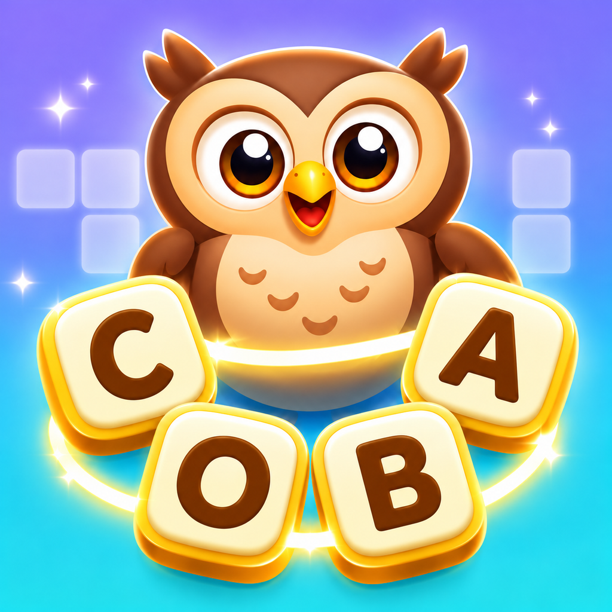
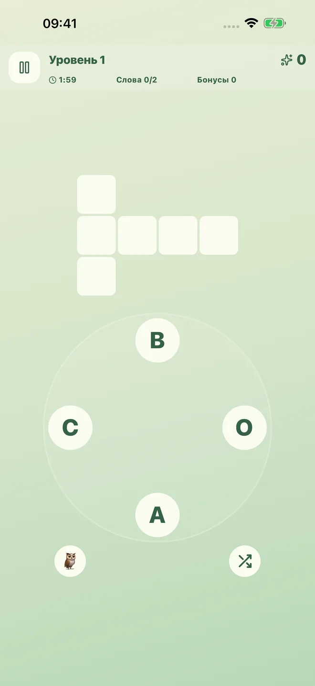
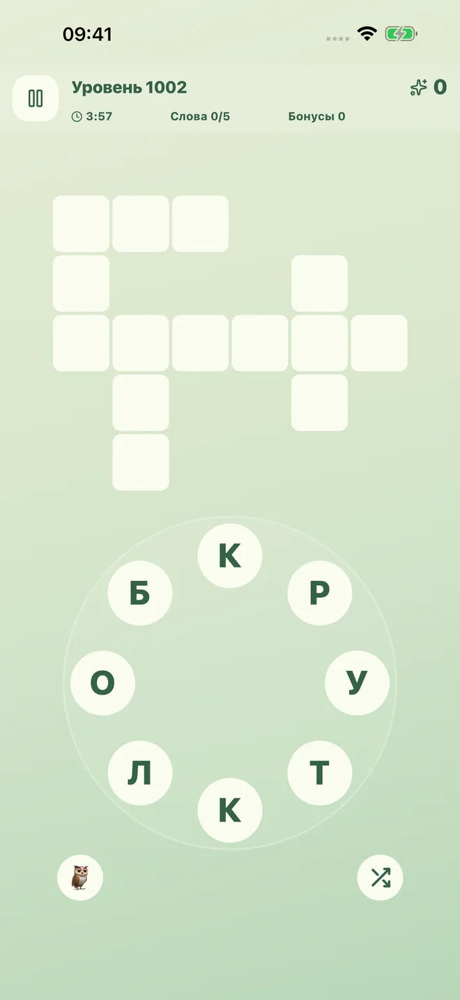
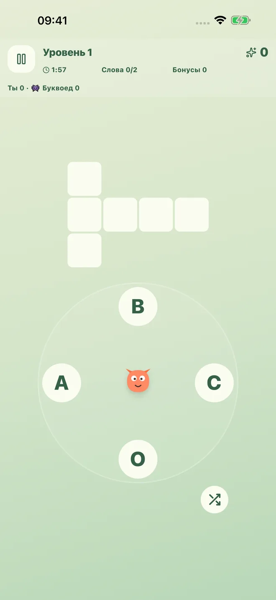

Букволесье

Соединяйте буквы. Открывайте новые миры.
Составляйте русские слова из круга букв и заполняйте кроссворды. Вас ждут 140 уровней в семи мирах, сова Варвара и игровой соперник Буквоед.
- Сюжетные уровни и бесконечная тропа по темам.
- Дуэли с компьютерным соперником.
- Подсказки, коллекция и создание своих заданий.
- Офлайн, без рекламы, покупок и регистрации.
Версия для iPhone и iPad подготовлена к публикации. Ссылка на App Store появится после выпуска.
Три способа играть

Соединяйте буквы и находите слова
Продолжайте по выбранной теме
Соревнуйтесь с БуквоедомПрогресс сохраняется на устройстве.